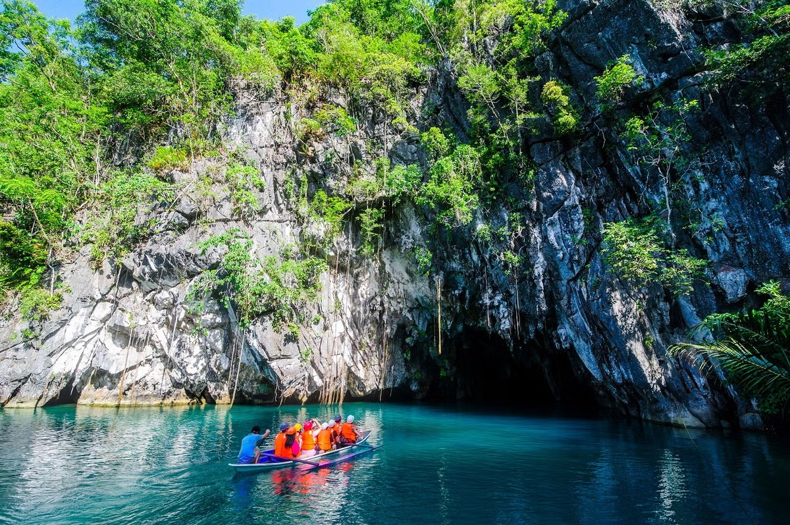

Park Profile • Palawan
Puerto Princesa Subterranean River National Park
This park features a spectacular limestone karst landscape with an underground river. One of the river's distinguishing features is that it emerges directly into the sea, and its lower portion is subject to tidal influences. The area also represents a significant habitat for biodiversity conservation. The site contains a full 'mountain-to-sea' ecosystem and has some of the most important forests in Asia.
Puerto-Princesa Subterranean River National Park encompasses one of the world’s most impressive cave systems, featuring spectacular limestone karst landscapes, pristine natural beauty, and intact old-growth forests and distinctive wildlife. It is located in the south-western part of the Philippine Archipelago on the mid western coast of Palawan, approximately 76 km northwest of Puerto Princesa and 360 km southwest of Manila.
The property, comprising an area of approximately 22,202 ha, contains an 8.2km long underground river. The highlight of this subterranean river system is that it flows directly into the sea, with its brackish lower half subjected to tidal influence, distinguishing it as a significant natural global phenomenon. The river’s cavern presents remarkable, eye catching rock formations. The property contains a full mountain-to-sea ecosystem which provides significant habitat for biodiversity conservation and protects the most intact and noteworthy forests within the Palawan biogeographic province. Holding the distinction of being the first national park devolved and successfully managed by a local government unit, the park’s effective management system is a symbol of commitment by the Filipino people to the protection and conservation of their natural heritage.
Helpful reminders
- Check official park announcements and local weather before visiting.
- Follow posted rules and instructions from park staff or guides.
- Respect nature and local communities; take all trash with you.